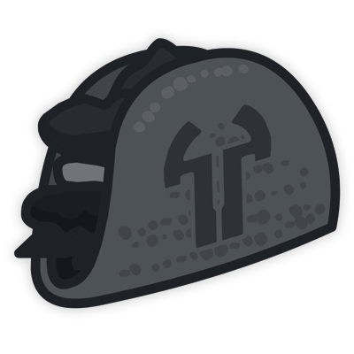

Home
Tribes 2 Discord Community Website
Discord Web v0.4 Discord_Web Github
This is the forth iteration of the Discord community website transitioning from a static passthrough website to much more with the addition of stats, downloads, possibly guides, and other useful information for new players.
Tribes 2 Discord, TacoServer, BattleBot, Stats, and all other projects would not be possible without the support of the community
Home